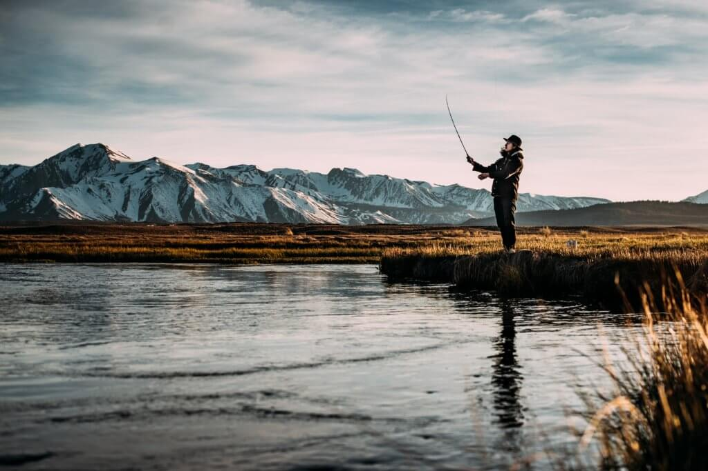
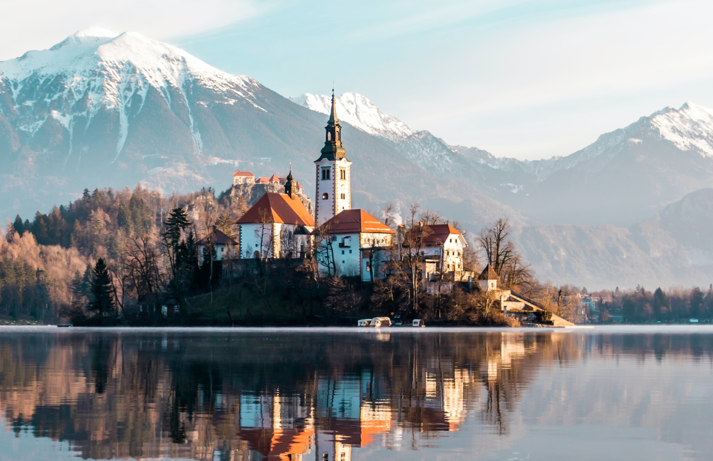

About Me
Hi there! Now that I have your attention, I might as well tell you a little about myself. I am a 25-year-old student web developer who is currently working as an accountant but studying to change careers. I've always had a passion for technology and programming, and after years of feeling unfulfilled in my accounting job, I decided to pursue my dream of becoming a web developer.

When I'm not studying, I like to stay active by hitting the gym or going for a run outside. Fitness has always been important to me, and I find that it helps me stay focused and energized throughout the day. I'm also an avid fisherman, and I love nothing more than spending a day on the water, catching fish and enjoying the peacefulness of nature.
In addition to fitness and fishing, I'm also a big fan of travel. I love exploring new places and experiencing different cultures. Some of my favorite trips have been to Europe, where I have been able to see some of the world's most beautiful cities and landmarks.
